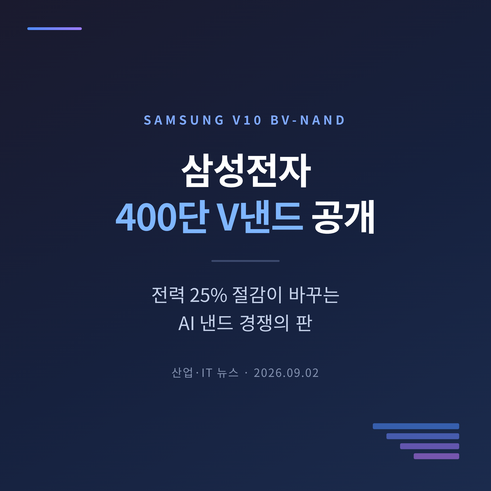
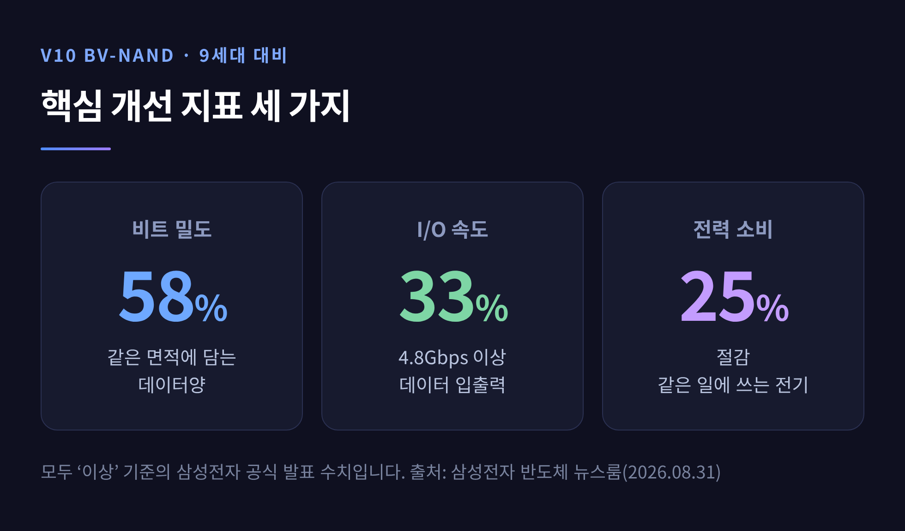
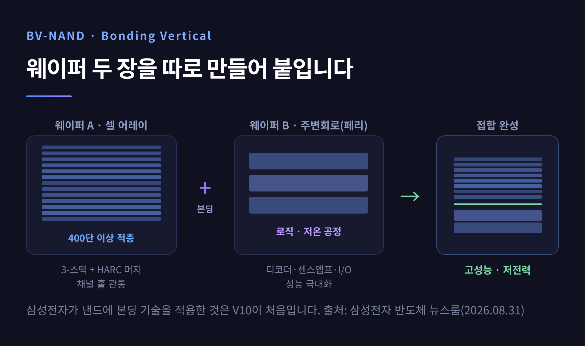
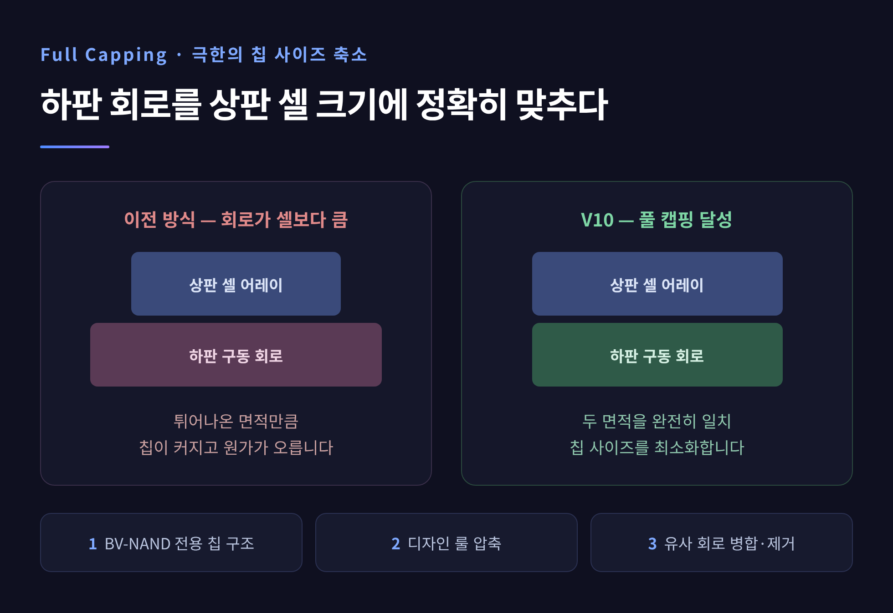
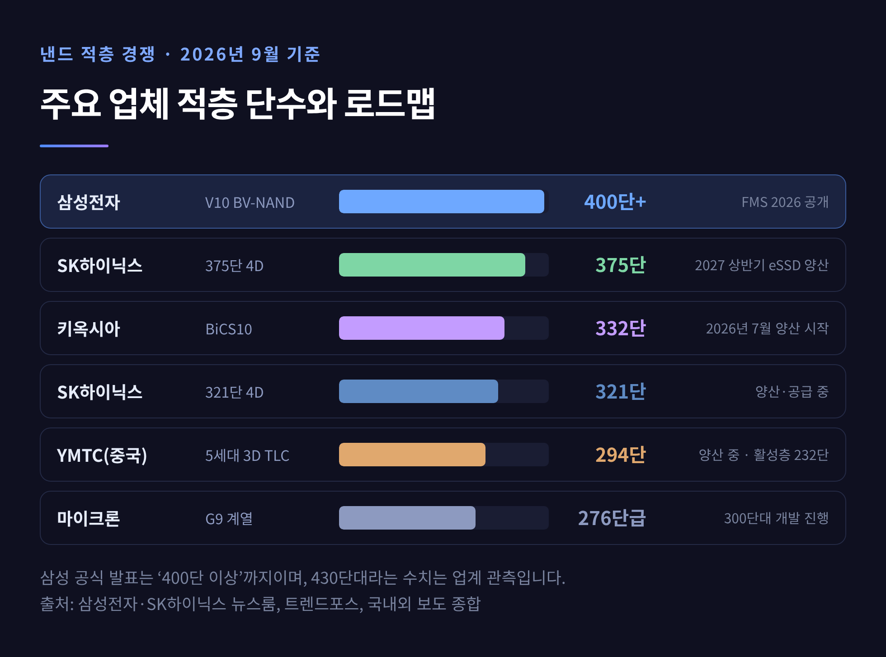
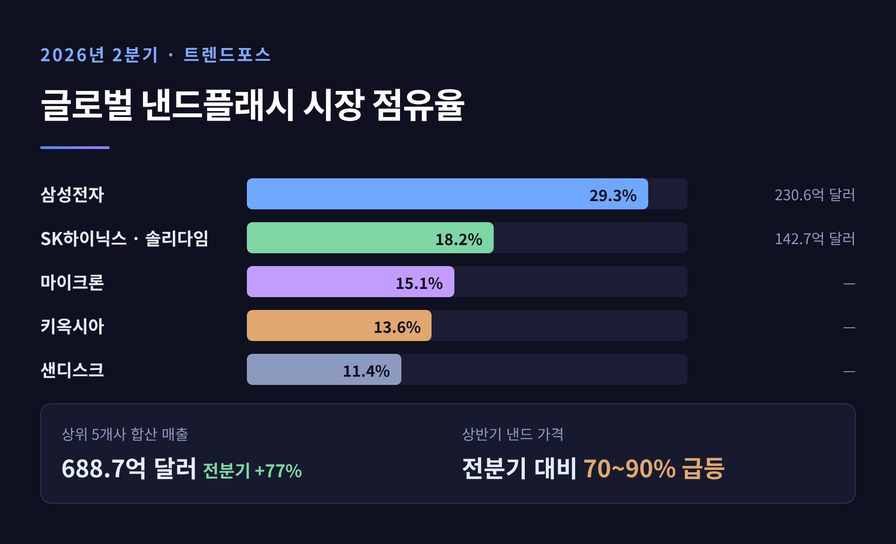

삼성전자 400단 V낸드 공개, 전력 25% 절감이 바꾸는 AI 낸드 판
세 줄 요약
- 삼성전자가 8월 31일 반도체 뉴스룸을 통해 10세대 V낸드 'V10 BV-NAND'의 개발 과정을 상세히 공개했습니다. 400단 이상을 쌓은 업계 첫 제품입니다.
- 전 세대 대비 비트 밀도 58% 이상, 입출력 속도 33% 이상 향상, 전력 25% 이상 절감. 세 지표를 동시에 끌어올린 것이 핵심입니다.
- 낸드 경쟁의 축이 '얼마나 높이 쌓느냐'에서 '어떻게 쌓느냐'로 옮겨갔습니다. 웨이퍼 본딩이 그 분기점입니다.

이번 글에서는 삼성전자의 10세대 V낸드 공개가 왜 반도체 업계의 주목을 받는지 정리해 보겠습니다. 발표된 수치가 무엇을 뜻하는지, 그리고 경쟁사들의 위치는 어디쯤인지까지 함께 살펴보겠습니다.
8월 31일, 삼성이 스스로 개발 과정을 꺼냈습니다
삼성전자 반도체 뉴스룸이 지난 8월 31일 V10 BV-NAND 개발진 인터뷰를 게재했습니다. 상품기획을 맡은 김병희 PL과 신지연 TL, 개발을 맡은 박상수 PL과 정다운 PL이 등장합니다.
제품 자체가 처음 나온 것은 아닙니다. V10은 8월 4일부터 6일까지 미국 산타클라라에서 열린 FMS(Future of Memory and Storage) 2026에서 이미 공개됐습니다. 그 자리에서 '3D & NAND Innovation Award'를 받았습니다.
이번 기고가 주목받는 이유는 따로 있습니다. 그동안 수치로만 알려졌던 400단 돌파의 뒷면, 즉 어떤 벽에 부딪혔고 무엇으로 넘었는지를 회사가 직접 설명했기 때문입니다. 국내 언론은 9월 1일 아침부터 이 내용을 받아 보도했습니다.
이름부터 짚고 가겠습니다. BV는 'Bonding Vertical'의 약자입니다. 웨이퍼를 붙여서 수직으로 만든 V낸드라는 뜻입니다.
숫자 세 개 — 58%, 33%, 25%
삼성이 공식으로 밝힌 V10의 개선폭은 세 가지입니다.
- 비트 밀도 58% 이상 향상 — 같은 면적에 담기는 데이터양입니다. 9세대 대비 수치입니다.
- I/O 속도 4.8Gbps 이상, 33% 이상 향상 — 데이터를 넣고 빼는 속도입니다.
- 전력 소비 25% 이상 절감 — 같은 일을 하면서 쓰는 전기가 4분의 1가량 줄었습니다.

반도체에서 이 셋은 보통 함께 가지 않습니다. 집적도를 올리면 전력이 늘고, 속도를 높이면 발열이 붙습니다. 박상수 PL이 "늘 상충하는 요소들을 조율해야 하는 어려운 과제"라고 표현한 이유입니다.
이 낸드는 128TB 초고용량 SSD와 차세대 PCIe Gen7 SSD를 떠받치는 부품이 됩니다. 다이 하나당 용량은 1Tb, 셀 방식은 3D TLC입니다.
낸드는 왜 아파트처럼 쌓게 됐나
비전공 독자를 위해 잠시 기본을 짚겠습니다.
낸드 플래시는 데이터를 저장하는 방 하나하나, 즉 셀을 평면에 촘촘히 배치하는 방식으로 발전해 왔습니다. 그런데 평면을 좁히는 데는 한계가 왔습니다. 그래서 방향을 위로 틀었습니다. 셀을 층층이 쌓아 올린 것이 3D 낸드, 삼성 이름으로는 V낸드입니다.
'단수'는 그 층의 개수입니다. 삼성은 워드라인(Word Line)을 기준으로 셉니다. 층을 높일수록 같은 땅에 더 많은 데이터가 들어갑니다.
문제는 높이입니다. 400층짜리 건물을 지으려면 맨 위층부터 지하까지 관통하는 통로를 뚫어야 합니다. 낸드에서는 이것이 '채널 홀'입니다. 이 초고종횡비 구멍을 뚫는 공정을 HARC 식각이라 부릅니다.
삼성은 V10에서 셀을 세 덩어리로 나눠 만든 뒤 수직으로 잇는 3-스택 방식을 썼습니다. 여기에 공정 스텝과 비용 증가를 억제하는 'HARC 머지' 기술을 붙였고, 멀티 홀과 제로 더미 홀 기술까지 접목했습니다. 비트 밀도 58% 향상은 이 조합의 결과입니다.

웨이퍼 두 장을 붙였습니다
V10에서 진짜 달라진 지점은 여기입니다.
예전에는 데이터를 담는 셀과 그것을 구동하는 주변회로(페리)를 한 장의 웨이퍼 위에 함께 만들었습니다. 지금은 둘을 각각 다른 웨이퍼에서 따로 만든 뒤 붙입니다. 이것이 웨이퍼 본딩입니다.
효과는 분명합니다. 따로 만들면 주변회로는 로직 공정의 장점을 그대로 쓸 수 있습니다. 저온 공정을 적용해 주변회로를 더 작게 줄일 수 있게 됐고, 트랜지스터 특성이 좋아지면서 입출력 성능이 함께 올랐습니다.
삼성이 낸드에 본딩 기술을 넣은 것은 이번이 처음입니다. 사내 이미지센서(CIS) 부문이 쓰던 본딩 설비와 기술 자문을 받아 속도를 냈다고 정다운 PL은 설명했습니다.
인터페이스 쪽 기술도 여럿 들어갔습니다. 삼성 고유의 Pin-ODT 기술로 명령·주소 분리(SCA) 방식을 손봐 I/O 효율을 75% 이상 끌어올렸습니다. 고속 전송에서 신호가 뭉개지는 현상을 줄이기 위해 DFE와 RDCA도 적용했습니다.
전력 절감은 더 잘게 쪼개져 있습니다. 주변회로 공급 전압을 낮추는 저전력 설계, 외부 전원을 직접 쓰는 e-PIN 구조, 워드라인 충·방전 전력을 줄이는 제어 기술, 고속 동작 시 채널 전압을 낮추는 PI-LTT 기술이 겹겹이 쌓였습니다. 25% 절감은 어느 한 방의 결과가 아니었습니다.
개발진이 넘어야 했던 벽
기고에서 가장 눈에 띄는 대목은 '풀 캡핑(Full Capping)'입니다.
셀을 고집적화하면 그것을 구동할 주변회로 면적도 따라서 커집니다. 칩이 커지면 원가가 오릅니다. 그래서 개발진은 하판 구동 회로를 상판 셀 어레이와 정확히 같은 크기로 맞추는 것을 목표로 삼았습니다.
방법은 세 갈래였습니다. BV-NAND에 맞는 차세대 칩 구조를 새로 짜고, 디자인 룰을 조여 트랜지스터 크기를 최소화하고, 비슷한 기능을 하는 회로를 병합해 없앴습니다. 박상수 PL은 이를 "극한의 칩 사이즈 감소"라고 표현했습니다.

두 번째 벽은 워드라인 정전용량이었습니다. 층이 늘수록 이 값이 커지고, 전력 증가와 성능 저하, 셀 신뢰성 열화로 연쇄됩니다. 개발진은 멀티 스택을 정밀 제어하는 설계로 대응했습니다. 쓰기 동작에서 선택되지 않은 스택의 워드라인 전압을 70% 이상 낮췄고, 비트 에러율(BER)을 4% 개선했습니다.
세 번째는 웨이퍼가 휘는 문제였습니다. 층이 쌓일수록 박막 스트레스가 커져 웨이퍼가 휩니다. 정다운 PL은 기존 방식으로는 한계가 명확했다고 인정했습니다. 8대 공정 엔지니어들이 신공정과 신규 막질을 동원해 스트레스를 낮추는 쪽으로 풀었습니다.
기술 설명만 놓고 보면 매끄럽지만, 회사 스스로 "수백 명이 매일 토론하며 문제를 해결한 과정"이라고 적었습니다. 순탄한 개발은 아니었던 셈입니다.
순위가 뒤집힌 적층 경쟁
이 대목이 산업적으로 더 흥미롭습니다.
불과 얼마 전까지 적층 단수 1위는 삼성이 아니었습니다. SK하이닉스가 321단 1Tb TLC 4D 낸드로 세계 최초 300단 벽을 넘었고, 일본 키옥시아가 332단 BiCS10을 2026년 7월부터 양산하며 앞서 나갔습니다. 삼성은 280~290단대에 머물러 있다는 평가를 받았습니다.
삼성의 선택은 300단대를 건너뛰는 것이었습니다. 곧장 400단으로 갔습니다.

경쟁사들도 손을 놓고 있지는 않습니다. SK하이닉스는 같은 FMS 2026에서 웨이퍼 본딩을 적용한 375단 4D 낸드를 공개했습니다. 전 세대 대비 전력당 성능이 2.5배라고 밝혔고, 이를 기반으로 한 고성능 eSSD를 2027년 상반기에 양산하겠다고 했습니다.
키옥시아의 332단은 인터페이스 속도 4.8Gbps에 비트 밀도는 BiCS8 대비 59% 증가라고 알려졌습니다. 일본 이와테현 기타카미의 신규 Fab 2에서 생산합니다. 미국 마이크론은 276단급을 지나 300단에 다가서고 있습니다. 중국 YMTC는 294단 제품을 이미 양산 중입니다. 실제 활성층은 232단이고, 자체 하이브리드 본딩 기술인 '엑스타킹'을 씁니다.
여기서 한 가지 흐름이 읽힙니다. 삼성도, SK하이닉스도, YMTC도 모두 웨이퍼 혹은 하이브리드 본딩으로 갔습니다.
"높이 쌓는 경쟁은 이제 어떻게 쌓느냐의 경쟁으로 바뀌었습니다."
다만 짚어둘 그림자도 있습니다. 400단급 본딩 기술과 관련 특허 일부를 중국 업체가 앞서 확보했다는 지적이 국내에서 꾸준히 제기돼 왔습니다.
AI 추론이 낸드를 다시 불러냈습니다
낸드는 오랫동안 스마트폰과 PC의 부품이었습니다. 지금은 AI 데이터센터가 수요를 끌고 갑니다.
이유는 AI 활용이 학습에서 추론으로 넘어갔기 때문입니다. 대규모 언어모델이 사용자와 주고받은 대화를 KV 캐시(Key-Value Cache) 형태로 보관하면서, 저장 공간 수요가 급격히 늘었습니다. 방대한 데이터를 저장하고 반복해서 불러오는 작업이 일상이 됐습니다.
전력도 변수가 됐습니다. 김병희 PL의 설명대로, 데이터센터에서는 전력 소비가 시스템 효율과 총소유비용(TCO)을 결정합니다. 낸드 한 칩의 전력 효율이 데이터센터 전체 전기요금으로 번역되는 구조입니다. 전력 25% 절감이 마케팅 문구가 아닌 이유가 여기 있습니다.
시장 숫자도 이를 뒷받침합니다. 시장조사업체 트렌드포스에 따르면 2026년 2분기 글로벌 상위 5개 낸드 업체의 합산 매출은 688억 7000만 달러로 전 분기보다 77% 늘었습니다. 삼성전자는 230억 6000만 달러(점유율 29.3%)로 1위, SK하이닉스와 솔리다임 합산은 142억 7000만 달러(18.2%)로 2위입니다. 마이크론 15.1%, 키옥시아 13.6%, 샌디스크 11.4%가 뒤를 이었습니다.

상반기 낸드 가격은 전 분기 대비 70~90%대로 급등했습니다. eSSD에 최적화된 QLC 낸드는 품귀 현상까지 나타났습니다. 흥미로운 점은 삼성의 매출이 70.7% 늘었는데도 점유율은 소폭 하락했다는 것입니다. 경쟁사들이 더 빨리 뛰었다는 뜻입니다.
이 글은 산업 동향을 정리한 해설이며, 특정 종목에 대한 투자 권유가 아닙니다. 투자 판단과 그 결과에 대한 책임은 투자자 본인에게 있습니다.
아직 확인되지 않은 것들
균형을 위해 확실하지 않은 부분도 적어둡니다.
정확한 단수 — 삼성이 공식으로 밝힌 표현은 "400단 이상"까지입니다. 업계에서는 430단대라는 관측이 나오지만, 회사가 확인한 수치는 아닙니다.
양산 시점 — 보도가 엇갈립니다. 7월에는 삼성이 이미 V10을 양산해 엔비디아에 공급하기 시작했다는 보도가 나왔습니다. 반면 3월부터 설비를 반입해 상반기에 라인을 갖추고 10월에 본격 양산한다는 일정도 함께 전해졌습니다. 8월 초 기준으로 "아직 양산 공식 발표는 없다"고 정리한 매체도 있습니다.
인터페이스 속도 — 삼성 한국 뉴스룸과 국내 보도는 4.8Gbps 이상으로 일치합니다. 해외 매체 톰스하드웨어는 삼성이 학회에서 발표한 소자를 근거로 5.6GT/s를 제시했습니다. 측정 기준이 다를 가능성이 커, 어느 하나로 단정하기 어렵습니다.
다음 라운드는 2027년입니다
앞으로의 그림은 대체로 이렇습니다.
삼성은 V10을 128TB SSD와 PCIe Gen7 SSD의 핵심 부품으로 밀 계획입니다. 적용처는 데이터센터에 그치지 않습니다. PC, 모바일, 엣지 AI까지 염두에 뒀다고 기획 단계부터 밝혔습니다.
경쟁의 다음 분기점은 2027년입니다. SK하이닉스의 375단 기반 eSSD 양산이 그때 시작되고, 청주 M17 건설에 19조 원이 투입됩니다. 키옥시아도 증산에 8조 원대를 쏟습니다. 2027년 물량이 사실상 완판 국면이라는 이야기가 벌써 나오는 상황입니다.
한계도 함께 봐야 합니다. 400단은 종착점이 아니라 통과점입니다. 층을 더 올릴수록 채널은 길어지고 웨이퍼는 더 휩니다. 이번에 쓴 해법들이 500단, 그 이상에서도 통할지는 아직 증명되지 않았습니다.
정리하면 이렇습니다.
이번 발표에서 진짜 새로운 것은 400이라는 숫자가 아니었습니다. 셀과 회로를 따로 만들어 붙이고, 남는 회로를 덜어내 칩을 셀 크기에 맞춰 넣은 설계 — 그 방식의 전환이 핵심이었습니다.
낸드 경쟁이 이제 층수 싸움이냐고 물으신다면, 그렇지 않다고 답하겠습니다. 높이는 결과일 뿐, 승부는 붙이는 방식에서 갈릴 것입니다.